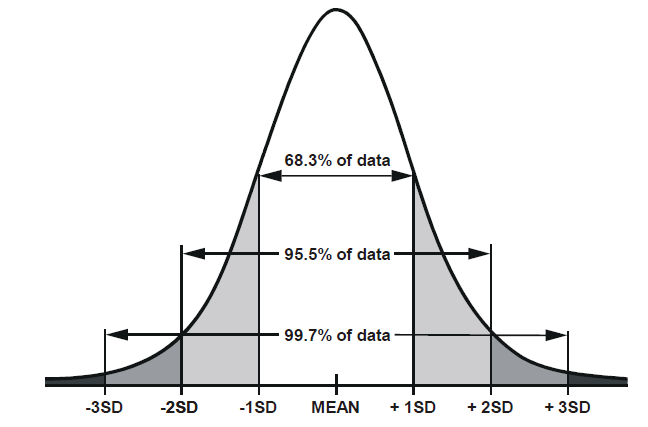

Hypothesis testing
Reading: Standard error
Recall what we have seen thus far:
We can generate a sample of size \(n\), drawn from a population which has a mean of \(\mu\) and a standard deviation of \(\sigma\):
# draw random sample of n = 20 from # a population with mean 178 and sd 10 rnorm(n = 20, mean = 178, sd = 10)And we can calculate the mean of a random sample:
mean(rnorm(n = 20, mean = 178, sd = 10))## [1] 182.4367We can repeat this process many times (using
replicate()), so that we have many sample means:manysamplemeans <- replicate(1000, mean(rnorm(n = 20, mean = 178, sd = 10))) # we now have 1000 sample means length(manysamplemeans)## [1] 1000
Why are we doing this?
What we’re doing here is showing the process of taking many samples of the same size from a population, and calculating a statistic on each sample.
The distribution of these sample statistics shows how they will vary from sample to sample due to chance.
In the above example, for samples of \(n=20\) drawn from a population with mean \(\mu=178\), and standard deviation \(\sigma=10\), we’re quite likely to get sample means between 174 and 182, and we’re less likely to see sample means \(<174\) and \(>182\).
hist(manysamplemeans)- The theoretical distribution of how sample statistics will vary on repeated sampling is known as the sampling distribution.
- The standard deviation of the sampling distribution is known as the standard error.
- Note that the bigger our sample size, the smaller our standard error - i.e., the more precise our sample means are going to be as estimates of the population mean:
Normal curves & CLT
Notice that the sampling distributions we have generated above all have similar properties - they are symmetric and bell-shaped. This shape of distribution is known as the normal distribution, and we can define a specific distribution via two parameters, the mean and the standard deviation.
In fact, the central limit theorem (CLT) states that when we take sufficiently large random samples from a population, the distribution of the sample means will be approximately normally distributed. This holds regardless of whether the population is normal (or skewed).
Figure 1: Population distributions (top) and sampling distributions (bottom)
There are certain properties of normal distributions which we can exploit, in order to determine how plausible an observed value is relative to a distribution. When a distribution is normal (symmetric and bell-shaped):
- 68% of values will lie within 1 standard deviation of the mean.
- 95% of values will lie within 1.96 standard deviations of the mean.
- 99.7% of values will lie within 3 standard deviations of the mean.

Standard Error in practice
In practice, we cannot actually draw lots and lots of samples in order to construct a sampling distribution, and we do not know the population parameters which are required to generate samples like we did above (we do not know the population mean \(\mu\) or standard deviation \(\sigma\))
Instead, we start with just one observed sample, e.g.:
observed_sample <- c(176.86, 169.45, 177.93, 175.89, 169.05, 162.56, 189.29, 196.15, 159.45, 165.69, 186.88, 176.9, 188.52, 164.05, 175.62, 180.89, 193.63, 161.59, 182.74, 184.23)What we can do is either:
A: Simulate lots of sampling. We can actually use resampling with replacement from our original sample as a means of imitating repeated sampling. This is known as Bootstrapping.
# bootstrap means of resamples with replacement of the same size (20) as observed sample bootstrap_means <- replicate(1000, mean(sample(observed_sample, size = 20, replace = TRUE))) # SE = sd of bootstrap resample means sd(bootstrap_means)## [1] 2.432326or B: Estimate the standard error using a formula:
\[ SE = \frac{\sigma}{\sqrt{n}} \\ \quad \\ \begin{align} & \text{Where} \\ & \sigma = \text{standard deviation} \\ & n = \text{sample size} \\ \end{align} \] Note that \(\sigma\) is the standard deviation of the population, which is unknown to us.
However, we can use the standard deviation of our sample (\(\hat \sigma\) or \(s\)) as our estimate of this:# SE = standard deviation / square root of n sd(observed_sample)/sqrt(length(observed_sample))## [1] 2.459404
Reading: Hypothesis testing
The sampling distribution is at the basis of null hypothesis significance testing.
Recall from the previous lab that we had a dataset on 131 participants who took part in a Stroop Task experiment. Each participant completed a color-naming task in two conditions: Matching and Mismatching. The differences in participants’ times for each condition are taken as indicating the effect of the color-word inteference (we have been calling this the “stroop effect”).
In our observed sample, the stroop effect had a mean \(\bar x =\) 2.4 and a standard deviation \(s=\) 5.02.
We can theorise about what the sampling distribution of means from samples of size \(n=131\) would be like, assuming there to be no stroop effect (i.e., the mean in the population is zero).
We can estimate the standard error by resampling our data with replacement, to generating many bootstrapped samples of size \(n=131\):
# bootstrap resample means: many_stroop_means <- replicate(1000, mean(sample(stroopdata$stroop_effect, size = 131, replace = TRUE))) # standard deviation of 1000 resample means sd(many_stroop_means)## [1] 0.4290532or we can estimate it by using the sample formula: \(\frac{\hat \sigma}{\sqrt{n}} = \frac{5.02}{\sqrt{131}} = 0.439\).
Either way, what we get is an idea of the distribution of what we would expect from means from samples of 131, under the hypothesis that there is no “stroop effect” - it will have a mean of 0 and a standard deviation of approximately 0.44.
Against this, we can then compare our observed mean:
Figure 2: Sampling distribution for mean of sample size 131, assuming population mean = 0. Observed sample mean shown in red
What we implicitly have here are two competing hypotheses: the null hypothesis (\(H_0\)), and an alternative hypothesis (\(H_1\)):
- \(H_0: \mu = 0\) The mean “stroop effect” in the population is equal to 0.
- \(H_1: \mu \neq 0\) The mean “stroop effect” in the population is not equal to 0.
We can perform a statistical test against the null hypothesis. Once we have defined our competing hypotheses (above), we decide on the appropriate test; calculate the test-statistic; and then compute the theoretical probability of results as or more extreme than those we observed.
Probability in NHST (null hypothesis significance testing)
Probabilities in NHST are defined as the relative frequency of an event over many trials (as “many” \(\to \infty\)). This requires assuming some features of the data generating process which guides what the “many trials” would look like (e.g., that there is no effect).
A \(p\)-value is the probability of observing results as or more extreme than the data, if the data were really generated by a hypothesised chance process.
Making decisions in NHST
We pre-specify \(\alpha\) (“alpha”) - the probability below which we will consider our results to be evidence against the null hypothesis.
e.g.: setting \(\alpha = 0.05\) means that if, assuming the null hypothesis to be true we would get a result at least as extreme as the one we observed only 0.05 (5%) of the time or less, then we will reject the null hypothesis.
Calculating a test statistic
Performaing an hypothesis test requires calculating a test statistic.
For our question (whether the mean stroop effect is different from 0), the appropriate test statistic is a \(t\)-statistic, which is used to determine whether a sample mean \(\bar x\) is likely to have been generated by a process with a specific theorised mean \(\mu_0\).
\[ t = \frac{\bar x - \mu_0}{\frac{s}{\sqrt{n}}} \]
Think about what each part of the formula represents. The top part \(\bar{x}-\mu_0\) is the distance from the observed mean to the hypothesised mean (zero):
mean(stroopdata$stroop_effect) - 0## [1] 2.402977And the bottom part is the standard error - the standard deviation of the sampling distribution:
# SE = sd / sqrt(n)
sd(stroopdata$stroop_effect) / sqrt(length(stroopdata$stroop_effect))## [1] 0.4382302Let’s calculate the \(t\)-statistic now:
t_obs = (mean(stroopdata$stroop_effect) - 0 ) / (sd(stroopdata$stroop_effect)/sqrt(131))
t_obs## [1] 5.483367Computing the p-value
Now that we have our test statistic, we are able to ask the following question:
- Assuming the null hypothesis \(H_0\) to be true, what is the probability that we observe a test statistic at least as extreme as the one we observed?
The sampling distribution of a \(t\)-statistic (i.e., the distribution of \(t\)-statistics from many many trials) follows a \(t\)-distribution. The particular shape of the \(t\)-distribution is determined by the degrees of freedom. By ‘degrees of freedom’ we refer to the number of independent observations in a set of data.
When we are estimating a mean from a single sample, the degrees of freedom is equal to the sample size minus one. This means that the sampling distribution of \(t\)-statistics from samples of size 10, would follow a \(t\)-distribution with \(10-1\) degrees of freedom.
You can see the \(t\)-distribution for different degrees of freedom below. Notice that as the degrees of freedom (\(\nu\) in the plot below) gets bigger (so as \(n\) gets bigger), the more the \(t\)-distibution fits a normal distribution.

Figure 3: t distributions. Source: https://en.wikipedia.org/wiki/Student%27s_t-distribution
We can ask R to calculate what proportion of the \(t\)-distribution with 130 (\(131-1\)) degrees of freedom is more extreme than the \(t\)-statistic we observed.
# our t statistic:
t_obs## [1] 5.483367# proportion of distribution to the right
pt(t_obs, df = 130, lower.tail = FALSE)## [1] 1.046221e-07As you can see, the resulting value is very small. This tells us that if there is truly no stroop effect, and we took lots and lots of samples of 131 peoples’ responses and calculated a \(t\)-statistic for each one of them, then \(1.0462207\times 10^{-7}\) of the time we will get a \(t\)-statistic \(>\) 5.48.
Recall, however, that our alternative hypothesis is that the mean is not equal to 0. This means we will reject the null hypothesis if we find a strong stroop effect in either direction.
So we therefore want to calculate the probability of getting a \(t\)-statistic as extreme as the one observed in either direction. Because the \(t\)-distribution is symmetrical, we can simply multiply the previous bit of code by 2.
pt(t_obs, df = 130, lower.tail = FALSE) * 2## [1] 2.092441e-07If the null hypothesis were true (the mean stroop effect in the population is zero), then 0.000000209 of random samples of size \(n=131\) would result in a \(t\)-statistic which is at least as extreme as the one we observed (\(\geq 5.48\) or \(\leq -5.48\)).
Given that this is less than our pre-specified level (0.05), we will take this as reason to reject the null hypothesis.
Letting R do all the work
The good news is that we can do all of this without having to go through the rigmarole of manually calculating the test-statistic or computing the p-value.
Pay attention to how the parts of the results of the below match up with our calculations above.
t.test(stroopdata$stroop_effect, mu = 0)##
## One Sample t-test
##
## data: stroopdata$stroop_effect
## t = 5.4834, df = 130, p-value = 2.092e-07
## alternative hypothesis: true mean is not equal to 0
## 95 percent confidence interval:
## 1.535991 3.269963
## sample estimates:
## mean of x
## 2.402977Tests have assumptions
Conducting hypothesis tests entails holding certain assumptions, for instance that the observed sample has been drawn at random from the population of interest.
For the test we just performed we also require the assumption that the data are drawn from a normally distributed population. In order to assess whether we have any evidence to reject this assumption, we can plot the data:
plot(density(stroopdata$stroop_effect))
qqnorm(stroopdata$stroop_effect)Figure 4: Stroop effect data: Density curve (normality is when curve is bell-shaped and symmetric), and Quantile-Quantile plot (normality is when lines fall on a straight diagonal)
And we can also perform a hypothesis test against the null hypothesis that the data is drawn from a normally distributed population. Note that if the \(p\)-value of this test is below our specified \(\alpha\), we have evidence that this assumption is violated (because the null hypothesis is our assumption)
shapiro.test(stroopdata$stroop_effect)##
## Shapiro-Wilk normality test
##
## data: stroopdata$stroop_effect
## W = 0.9897, p-value = 0.4417Because \(p\)>.05, we fail to reject the null hypothesis of the Shapiro-Wilk test that the sample came from a population that is normally distributed.
Shapiro-Wilk test did not indicate violation of the assumption of normality (\(W\)=0.99, \(p\)=0.442).
Exercises: Some basic tests
Single Sample \(t\)-test
Research Question Do Edinburgh University students report endorsing procrastination less than the norm?
The Procrastination Assessment Scale for Students (PASS) was designed to assess how individuals approach decision situations, specifically the tendency of individuals to postpone decisions (see Solomon & Rothblum, 1984). The PASS assesses the prevalence of procrastination in six areas: writing a paper; studying for an exam; keeping up with reading; administrative tasks; attending meetings; and performing general tasks. For a measure of total endorsement of procrastination, responses to 18 questions (each measured on a 1-5 scale) are summed together, providing a single score for each participant (range 0 to 90). The mean score from Solomon & Rothblum, 1984 was 33.
A student administers the PASS to 20 students from Edinburgh University.
The data are available at https://uoepsy.github.io/data/pass_scores.csv.
Conduct a one sample \(t\)-test to evaluate whether Edinburgh University students’ average score on the PASS is less than 33. Remember to check the assumptions!
Note: Think carefully about the wording of the research question. Is the alternative hypothesis “less than”, “greater than” or “not equal to”? What does this mean in relation to the areas of the \(t\)-distribution for which you will reject the null hypothesis - upper tail, lower tail, or both tails? Check out the help page for t.test() - is there some thing you can change to make sure it is the correct option?
Write up the results.
Research Question average height of students taking the statistics courses in Psychology at Edinburgh University in 2020/2021 is different from 165cm?
The data for students from all psychology statistics courses are available at https://uoepsy.github.io/data/surveydata_allcourse.csv.
Conduct a one sample \(t\)-test to evaluate whether the average height of students taking the statistics courses in Psychology at Edinburgh University in 2020/2021 is different from 165cm.
Remember: You should check that the data meet the assumptions of your test. This means you should investigate the extent to which your sample data appears to have been drawn from a normal distribution. However, this is real data, and real data is rarely normal! If you conduct a Shapiro-Wilk test, you may well find \(p<.05\) and conclude that your data is not normal.
So what do we do if a test indicates our assumptions are violated?
Well, we should bear a couple of things in mind.
- A decision rule such as \(p<.05\) on Shapiro-Wilk test creates very dichotomous thinking for something which is in reality not black and white. Real life distributions are not either normal or non-normal. Plot the data, and make a judgement!
- As it happens, the t-test is actually reasonably robust against slight deviations from normality! Plot your data and make a judgement!
- The deeper you get into statistics, the more you discover that it is not simply a case of following step-by-step rules:

Independent Samples \(t\)-test
In addition to testing the difference from an observed sample mean to some hypothesised mean, we can also conduct a \(t\)-test to explore the difference between two observed sample means.
Research Question Can a server earn higher tips simply by introducing themselves by name when greeting customers?
Researchers investigated the effect of a server introducing herself by name on restaurant tipping. The study involved forty, 2-person parties eating a $23.21 fixed-price buffet Sunday brunch at Charley Brown’s Restaurant in Huntington Beach, California, on April 10 and 17, 1988. Each two-person party was randomly assigned by the waitress to either a name or a no name introduction condition using a random mechanism. The waitress kept track of the two-person party condition and how much the party paid at the end of the meal.
The data are available at https://uoepsy.github.io/data/gerritysim.csv.
(This is a simulated example based on Garrity and Degelman (1990))
Conduct an independent samples \(t\)-test to assess whether higher tips are earned when the server introduces themselves by name, in comparison to when they do not.
Notes about assumptions
- Do the sample data arise from independent random samples from two populations OR from random assignment of the units to treatment groups?
- Is the quantitative variable of interest normally distributed in both populations/groups?
- Does the quantitative variable of interest have equal variance between the populations/groups? (you can test this using
var.test()).
Exercises: Writing results in Rmarkdown
For the results of a \(t\)-test, we can write our results like this:

In order for them to be compiled like this:
A one-sided one-sample t-test was conducted in order to determine if the average score on the Procrastination Assessment Scale for Students (PASS) for a sample of 20 students at Edinburgh University was significantly lower (\(\alpha = .05\)) than the average score obtained during development of the PASS.
Edinburgh University students scored lower (Mean = 30.7, SD = 3.31) than the score reported by the authors of the PASS (Mean = 33). This difference was statistically significant (t(19)=-3.11, p < .05, one-tailed).
This is one of the huge benefits of RMarkdown. Imagine we collected more data - we wouldn’t have to edit all the results, we could simply recompile and they would update for us!
Note how it works:
- the code chunk saves the results of the
t.test()function as a named objectres2. - in text, the backticks
`r … … … `are used to execute small bits of R code, and include the output within the text. For instance, the line`r res2$statistic %>% round(2)`gets the t-statistic from the results, and rounds it to 2 decimal places, which get’s printed out as -3.11.
Write up the results of from question B1 above, using as much inline R code (the backticks) as you can.
Compile your document to ensure that it gets rendered correctly.
No solution for this one I’m afraid.. It might be a bit of a trial-and-error to figure out why a document doesn’t compile. Try to read the errors - they (sometimes) give you clues.

This workbook was written by Josiah King, Umberto Noe, and Martin Corley, and is licensed under a Creative Commons Attribution 4.0 International License.